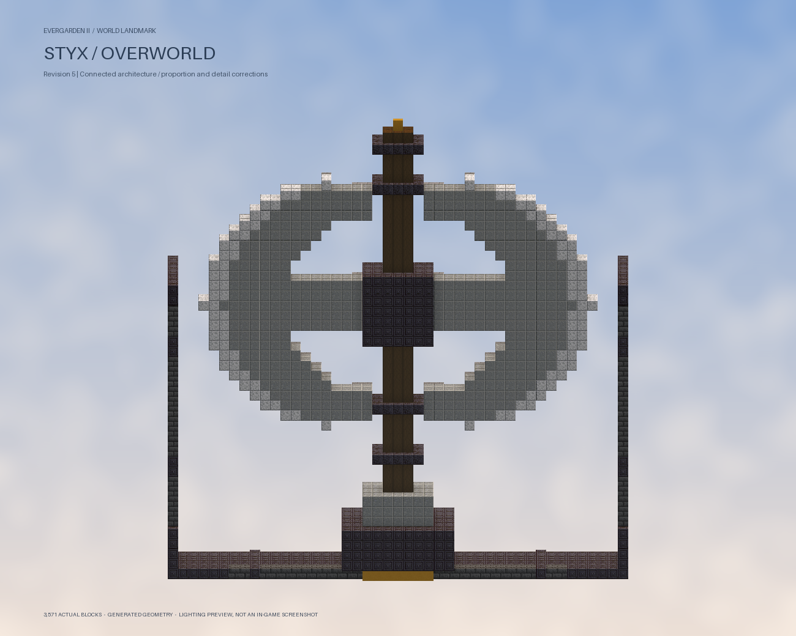

Acheron
22 furnished spaces; rare accent blocks: 2 / 128 maximum.


Before this correction pass


Connected crescent axe and socket; supported portals, rose windows, dome, gantry and lantern turret. Corrected furniture height, inward-facing artwork, ceiling hangers and explicit in-game fence/wall joins. No detached assemblies remain in the six authored assets. Rare material budgets, eight caches per site and boss courts retained. Actual blocks with simulated lighting, not game screenshots.

22 furnished spaces; rare accent blocks: 2 / 128 maximum.
12 furnished spaces; rare accent blocks: 9 / 128 maximum.


24 furnished spaces; rare accent blocks: 28 / 128 maximum.


28 furnished spaces; rare accent blocks: 3 / 128 maximum.


14 furnished spaces; rare accent blocks: 18 / 128 maximum.


10 furnished spaces; rare accent blocks: 4 / 128 maximum.